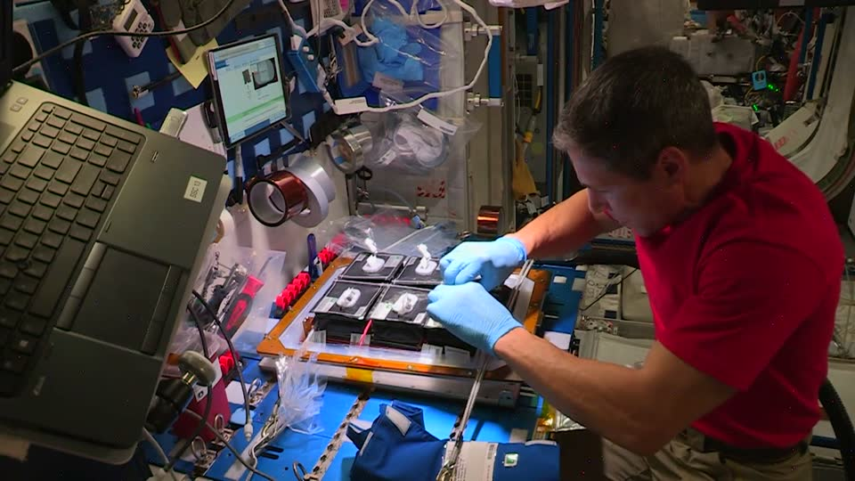
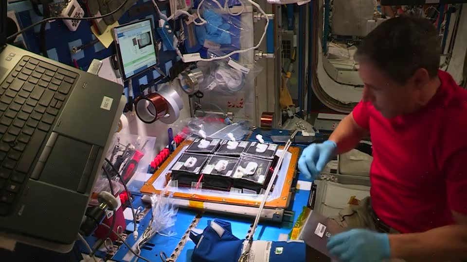
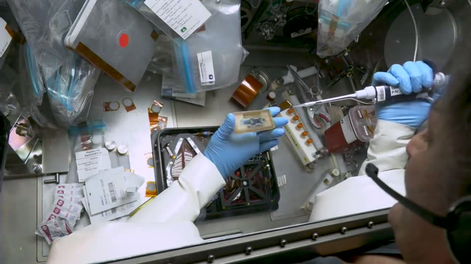
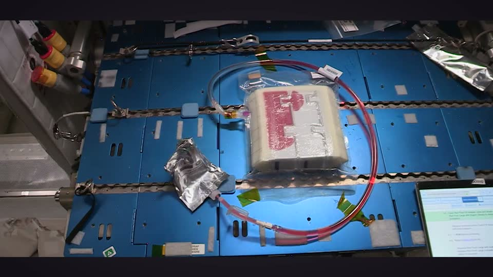
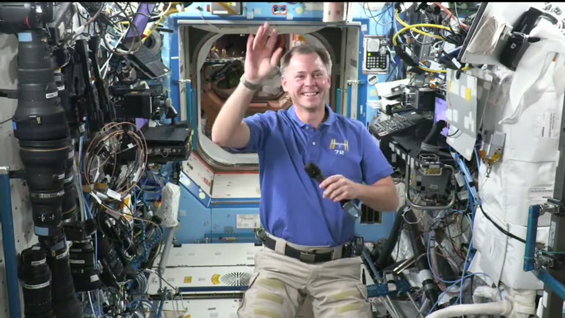

An understudy learns a role by watching the lead, then rehearses it on stage.
Understudy does that for robots. Teaching one is expensive, and nobody asks the person who did the task what mattered.
On a space station every crew hour is scarce: NASA prices one hour of ISS crew time at $130,000 for commercial activities. The robots meant to take over routine crew work need a clear task, a rehearsed program and labelled data. NASA already films crew procedures all the time. Understudy turns one such clip into the first two, and rehearses the result in orbit, where a released object drifts instead of resting.

One clip in, a rehearsed program out
- 1
Watch
The clip stays in the browser. Only a 480 px, 4 fps proxy goes to the model. For a gesture, MediaPipe traces the hand.
- 2
Label
A vision model turns the proxy into a task spec: timed steps, objects with size and symmetry, and targets.
- 3
Ask
A second model writes the robot program. Every number it would have to guess becomes a question for the person.
- 4
Rehearse
A simulated SO-101 arm runs the answered program in the browser, under Earth gravity and at 0 g.
- 5
Repair
When a rehearsal fails, the simulator's note goes back to the model, which patches the program, up to five times.
- 6
Export
The passing rollouts download as a LeRobot v2.1 skeleton, with a quality report that says what it is and is not.
Why it rehearses twice
Gravity is a setting. On Earth a released object rests where it was put. In orbit it keeps drifting, so a program that passed on the bench fails in orbit unless it holds the object until it is constrained. The repair loop has to find that patch.
Pick a gravity, then let go.
The arm holds a block over its target.
Mission chart
The browser does the watching and the rehearsing. Stateless routes on Vercel call NVIDIA's Nemotron models on Nebius Token Factory.
The routes are stateless and replayable. Without a key, or when Token Factory stops listing a model, every step answers from its recording and says why.
Telemetry
- < 1¢for a whole recorded session in the space showcase: $0.0007 to $0.0059, for 1 to 7 model calls
- 94%of solvable failing rehearsals fixed from the simulator's notes alone, within 5 patches
- $0.0024per fixed case on the bench harness
- 86%of runs failed by a naive, human-like program before any repair
Bench numbers come from small probe programs (insert, place, pour, carry) at Earth, Mars, Moon and orbit gravity, measured in the repository's harness.
Rehearsed from NASA footage
Every sample clip is public-domain footage from the ISS. The code never names a task.

Seed film, planted pillow by pillow

A pipette into a sample cartridge, in a glovebox

A drink bag squeezed into foam

A wave, traced by MediaPipe
Footage: NASA. Nothing here implies that NASA or the crew endorse Understudy.
What it proves
- The clarified task can be executed by a scripted SO-101 program, on Earth and in orbit.
- Its success criteria can be computed by a simulator.
- A model can repair a failing program from text notes, cheaply.
What it does not
- That a learned policy would succeed, or that a real grasp holds.
- Orbit is rigid-body physics at 0 g: no air currents, tethers or flight rules.
- The export is format-valid, not training data.